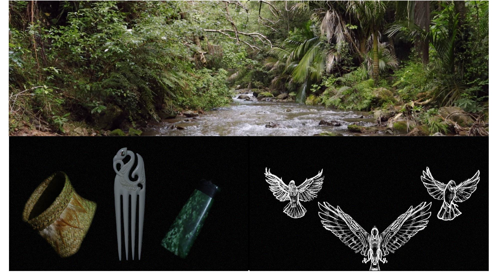

Matengaro Farrar
- Bachelor of Design
- Major in Communication Design
- Minor in Marketing
biography
Chur! My name is Matengaro Farrar or Ngaro for short. I hail from a small town called Ōpōtiki on the east coast. I’m currently working towards my Bachelor of Design majoring in Media Design with potential of further studies. I have always practiced traditional art and since starting at The University of Waikato, I have realised the breadth and possibilities that a digital medium can provide.
I have always had an affinity for creative pursuits no matter what form it took. And in my time at Waikato, I have gained and refined many skills and rekindled a passion and appreciation to explore my own culture, discovering new ways I can fuse the two worlds of modern design and traditional Māori toi. I have found that through the years of study a new passion to work alongside and with more of my culture and its people.
project description
In today’s social, political and cultural climate we see more and more appreciation and action for Māoridom. With the progress already in motion I hope to enable and develop a new appreciation and love for our ātaahua ahurea, beautiful culture. Not just for myself, but in an attempt to unify all those that are willing to explore.
I aimed to do this by creating a series of works that span from many different categories within the media and design worlds such as videography, poster design and concept art to both challenge myself and discover how adaptive our culture can be. Each piece tells its own story of importance to the history of Māoritanga yet displays how bright the future of it can be. All in the hopes of encouraging others to take those steps into Maoritanga and what the future might be for it.
Matauranga Māori

For more information contact us
Email: degreeshow@waikato.ac.nz
Faculty phone: 0800 924 528
Faculty information: cs.waikato.ac.nz